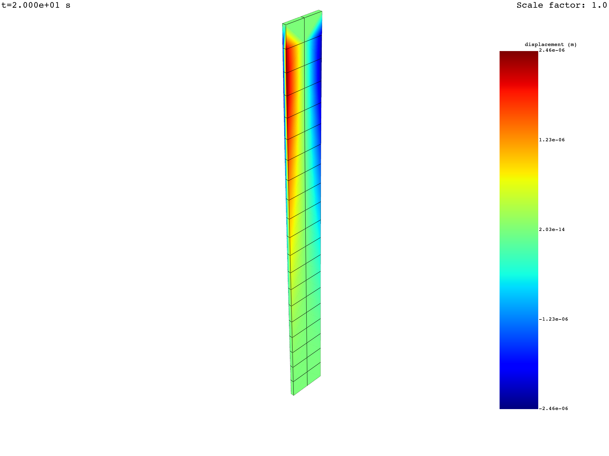

Note
Click here to download the full example code
Transient Simulation with Animation#
In this script transient simulation is processed to extract results like stress, strain, displacement. Extracting data for chosen time steps and animating is also displayed.
Perform required imports#
Perform required imports. # This example uses a supplied file that you can
get by importing the DPF examples package.
from ansys.dpf import post
from ansys.dpf.post import examples
Get Simulation object#
Get the Simulation object that allows access to the result. The Simulation
object must be instantiated with the path for the result file. For example,
"C:/Users/user/my_result.rst" on Windows or "/home/user/my_result.rst"
on Linux.
example_path = examples.find_msup_transient()
simulation = post.load_simulation(example_path)
# for no autocompletion, this line is equivalent to:
simulation = post.TransientMechanicalSimulation(example_path)
# print the simulation to get an overview of what's available
print(simulation)
Transient Mechanical Simulation.
Data Sources
------------------------------
/opt/hostedtoolcache/Python/3.8.16/x64/lib/python3.8/site-packages/ansys/dpf/core/examples/msup_transient_plate1.rst
DPF Model
------------------------------
Transient analysis
Unit system: MKS: m, kg, N, s, V, A, degC
Physics Type: Mechanical
Available results:
- displacement: Nodal Displacement
- velocity: Nodal Velocity
- acceleration: Nodal Acceleration
- reaction_force: Nodal Force
- stress: ElementalNodal Stress
- elemental_volume: Elemental Volume
- stiffness_matrix_energy: Elemental Energy-stiffness matrix
- artificial_hourglass_energy: Elemental Hourglass Energy
- thermal_dissipation_energy: Elemental thermal dissipation energy
- kinetic_energy: Elemental Kinetic Energy
- co_energy: Elemental co-energy
- incremental_energy: Elemental incremental energy
- elastic_strain: ElementalNodal Strain
------------------------------
DPF Meshed Region:
393 nodes
40 elements
Unit: m
With solid (3D) elements
------------------------------
DPF Time/Freq Support:
Number of sets: 20
Cumulative Time (s) LoadStep Substep
1 0.010000 1 1
2 0.020000 1 2
3 0.030000 1 3
4 0.040000 1 4
5 0.050000 1 5
6 0.060000 1 6
7 0.070000 1 7
8 0.080000 1 8
9 0.090000 1 9
10 0.100000 1 10
11 0.110000 1 11
12 0.120000 1 12
13 0.130000 1 13
14 0.140000 1 14
15 0.150000 1 15
16 0.160000 1 16
17 0.170000 1 17
18 0.180000 1 18
19 0.190000 1 19
20 0.200000 1 20
Extract displacement at all times or on a selection#
# query the displacement vectorial field for all times
displacement = simulation.displacement(all_sets=True)
print(displacement)
# animation shows the norm of vectorial fields with several components
displacement.animate(deform=True, title="U")
# get specific components with "components"
x_displacement = simulation.displacement(all_sets=True, components=["X"])
print(x_displacement)
x_displacement.animate(deform=True, title="UX")
# get the norm of a vectorial result with "norm=True"
displacement_norm = simulation.displacement(all_sets=True, norm=True)
print(displacement_norm)
displacement_norm.animate(deform=True, title="U norm")
# get the available time set ids in the simulation
print(simulation.set_ids)
# extract displacement on given time steps or select the times steps from the already evaluated
# displacement DataFrame
displacement = simulation.displacement(set_ids=simulation.set_ids[5:])
displacement = displacement.select(set_ids=simulation.set_ids[5:])
print(displacement)
- 

results U ...
set_ids 1 2 3 4 5 6 ...
node_ids components ...
9 X 1.6236e-14 8.6224e-14 2.1451e-13 3.6103e-13 4.9262e-13 5.7822e-13 ...
Y 1.4763e-04 5.8099e-04 1.2121e-03 1.9949e-03 2.7524e-03 3.1675e-03 ...
Z 1.9644e-06 9.6317e-06 2.2793e-05 3.8222e-05 5.2323e-05 6.1003e-05 ...
96 X 2.6765e-08 -4.9606e-08 -3.7405e-07 -6.8920e-07 -8.8899e-07 -1.1142e-06 ...
Y 1.4776e-04 5.8073e-04 1.2102e-03 1.9914e-03 2.7480e-03 3.1619e-03 ...
Z 1.9663e-06 9.6467e-06 2.2825e-05 3.8272e-05 5.2398e-05 6.1085e-05 ...
...
results U ...
set_ids 1 2 3 4 5 6 ...
node_ids components ...
9 X 1.6236e-14 8.6224e-14 2.1451e-13 3.6103e-13 4.9262e-13 5.7822e-13 ...
96 2.6765e-08 -4.9606e-08 -3.7405e-07 -6.8920e-07 -8.8899e-07 -1.1142e-06 ...
95 2.9067e-08 -2.1748e-08 -3.0981e-07 -5.8388e-07 -7.3503e-07 -9.4097e-07 ...
10 1.9354e-14 1.0285e-13 2.5600e-13 4.3087e-13 5.8790e-13 6.9009e-13 ...
30 1.3959e-14 7.4010e-14 1.8369e-13 3.0883e-13 4.2175e-13 4.9490e-13 ...
68 -2.6765e-08 4.9606e-08 3.7405e-07 6.8920e-07 8.8899e-07 1.1142e-06 ...
...
results U ...
set_ids 1 2 3 4 5 6 7 ...
node_ids ...
9 1.4764e-04 5.8107e-04 1.2123e-03 1.9952e-03 2.7529e-03 3.1680e-03 3.2283e-03 ...
96 1.4777e-04 5.8081e-04 1.2104e-03 1.9918e-03 2.7485e-03 3.1625e-03 3.2224e-03 ...
95 1.6695e-04 6.7794e-04 1.4446e-03 2.3856e-03 3.2866e-03 3.7912e-03 3.8672e-03 ...
10 1.6681e-04 6.7805e-04 1.4462e-03 2.3885e-03 3.2903e-03 3.7959e-03 3.8722e-03 ...
30 1.4764e-04 5.8107e-04 1.2123e-03 1.9952e-03 2.7529e-03 3.1680e-03 3.2283e-03 ...
68 1.4777e-04 5.8081e-04 1.2104e-03 1.9918e-03 2.7485e-03 3.1625e-03 3.2224e-03 ...
...
[1, 2, 3, 4, 5, 6, 7, 8, 9, 10, 11, 12, 13, 14, 15, 16, 17, 18, 19, 20]
results U ...
set_ids 6 7 8 9 10 11 ...
node_ids components ...
9 X 5.7822e-13 5.9149e-13 5.3316e-13 4.1647e-13 2.7073e-13 1.3329e-13 ...
Y 3.1675e-03 3.2277e-03 2.9633e-03 2.3102e-03 1.5053e-03 8.1690e-04 ...
Z 6.1003e-05 6.2516e-05 5.6466e-05 4.4106e-05 2.8780e-05 1.4367e-05 ...
96 X -1.1142e-06 -1.1700e-06 -9.7434e-07 -7.7403e-07 -5.1423e-07 -1.5231e-07 ...
Y 3.1619e-03 3.2218e-03 2.9585e-03 2.3064e-03 1.5027e-03 8.1613e-04 ...
Z 6.1085e-05 6.2600e-05 5.6545e-05 4.4166e-05 2.8819e-05 1.4388e-05 ...
...
Extract strain at all times or on a selection#
strain = simulation.elastic_strain_nodal(all_sets=True)
print(strain)
strain = simulation.elastic_strain_nodal(set_ids=simulation.set_ids[10:])
print(strain)
results EPEL ...
set_ids 1 2 3 4 5 6 ...
node_ids components ...
9 XX -5.1055e-07 1.0529e-06 7.5275e-06 1.3842e-05 1.7878e-05 2.2371e-05 ...
YY -5.8226e-07 8.7907e-07 7.4010e-06 1.3689e-05 1.7612e-05 2.2143e-05 ...
ZZ 1.8693e-06 -3.1040e-06 -2.4796e-05 -4.5782e-05 -5.8972e-05 -7.4037e-05 ...
XY 1.1102e-16 2.2812e-16 4.7184e-16 7.9103e-16 1.3323e-15 1.2212e-15 ...
YZ -3.7610e-09 -5.8703e-08 -1.2875e-07 -2.0941e-07 -3.1235e-07 -3.4685e-07 ...
XZ -1.0658e-14 -5.6843e-14 -1.1369e-13 -1.7053e-13 -3.4106e-13 -3.4106e-13 ...
...
results EPEL ...
set_ids 11 12 13 14 15 16 ...
node_ids components ...
9 XX 3.1091e-06 -1.7232e-07 -5.0382e-07 -3.0068e-08 4.7140e-06 1.1642e-05 ...
YY 2.9312e-06 -2.7887e-07 -5.6070e-07 -1.7267e-07 4.5633e-06 1.1516e-05 ...
ZZ -9.9484e-06 8.2313e-07 1.8122e-06 4.3304e-07 -1.5362e-05 -3.8511e-05 ...
XY 4.7184e-16 3.6082e-16 1.1102e-16 4.0246e-16 4.6491e-16 7.3552e-16 ...
YZ -8.3922e-08 -2.5142e-08 6.5868e-09 -3.7990e-08 -9.8658e-08 -1.7393e-07 ...
XZ -8.5265e-14 -2.1316e-14 -6.6613e-15 -4.2633e-14 -1.1369e-13 -1.7053e-13 ...
...
Animate strain eqv over all times#
strain_eqv = simulation.elastic_strain_eqv_von_mises_nodal(all_sets=True)
strain_eqv.animate(deform=True, title="E_eqv")
Total running time of the script: ( 0 minutes 3.249 seconds)